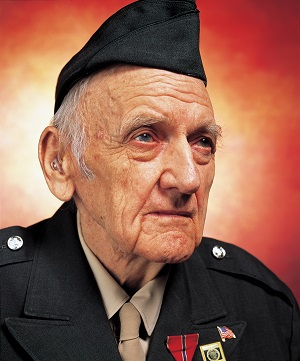
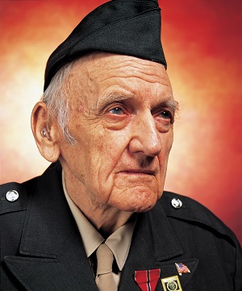

- Del 1 de octubre de 2025 al 29 de noviembre de 2025
- Pabellón Vivian Maier
El artista norteamericano Andrés Serrano nació en Nueva York y es hijo de padre hondureño y de madre cubana. Su formación católica marcaría la carrera de fotógrafo en dos aspectos principales: en el uso de su obra de la simbología y los temas de la iglesia y sus conocimientos del arte religioso. El aspecto ritualista y teatral de la mayoría de sus obras, incluyendo aquellas que son más conceptuales y aparentemente abstractas, comola serie sobre fluidos, lo consigue a través de una iluminación muy pensada, con unas composiciones que dejan muy poco espacio para el azar, y por unas fotografías que parten de una idea, de un concepto y que tienen una finalidad calculada y muy meditada; aunque a veces algunas de sus piezas han sido mal interpretadas, especialmente por los políticos puritanos estadounidenses. No obstante, a pesar de ser obras construids artísticamente para darnos esa sensación ritualista, lo real emerge cargado de una poderosa presencia (por ejemplo en la serie de la morgue), como el retrato de una humanidad sin artificios; las personas fotografiadas son tan reales como la vida, sus vidas y su muerte, pero a la vez se asemejan a personajes de la comedia y de la tragedia humana, son retablos de la existencia en su estado puro y duro.

, 1990.jpg)

 
